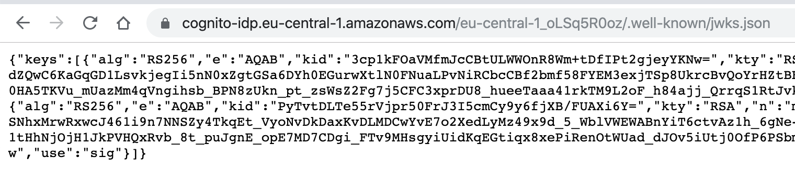

<style>

    #__0__ .canvas {
        position: fixed;
        top: 0;
        left: 0;
        width: 100vw;
        height: 100vh;
    }

    #__0__ .rect-text {
        font-size: 2em;
    }

    img.usertable {
        height: 400px;
    }

    img.apigateway {
        height: 390px;
    }

    img.login {
        height: 400px;
    }

    img.jwt {
        width: 1000px;
    }

    img.cloudfront {
        position: absolute;
        top: 100px;
        left: 500px;
        opacity: .8;
    }

    img.terraform {
        position: absolute;
        top: 400px;
        left: 300px;
        opacity: .8;
    }

    img.gitlab {
        position: absolute;
        top: 600px;
        left: 500px;
        width: 300px;
        opacity: .8;
    }

</style>

<div class="svgcontainer">
    <svg class="canvas">
        <g class="aws">
            <g class="browser"></g>
            <g class="cognito"></g>
            <g class="gapi"></g>
            <g class="glambda"></g>
            <g class="gdynamoDb"></g>
        </g>
    </svg>
</div>

<div class="imagecontainer"></div>

<script>

    (function () {
        console.log("#__0__")

        const svgElement = document.querySelector("#__0__ .canvas");
        const sketch = _0.createSketch(svgElement);

        _0.useTippy("transparent");

        const lambdaRect = sketch.rectProz(.2, .7, .6, .2);
        _0.addStep(sketch.createRectStep("lambda", lambdaRect, "AWS Lambda", {container: ".glambda"}));

        const getUserDetailsRect = sketch.rectProzFromRect(lambdaRect, .25, .1, .3, .8);
        const getUserDetailsId = `#${sketch.qid("getUserDetails")}`;
        _0.addStep(sketch.createRectStep("getUserDetails", getUserDetailsRect, "getUserDetails()", {fill: "cyan", container: ".glambda"}))
        _0.addStep(_0.tooltipStep(getUserDetailsId, "JavaScript", "top"));

        const updateUserDetailsRect = sketch.rectProzFromRect(lambdaRect, .6, .1, .3, .8);
        const updateUserDetailsId = `#${sketch.qid("updateUserDetails")}`;
        _0.addStep(_0.combine(
            sketch.createRectStep("updateUserDetails", updateUserDetailsRect, "updateUserDetails()", {fill: "cyan", container: ".glambda"}),
            _0.tooltipStep(updateUserDetailsId, "JavaScript", "top")
        ))

        _0.addStep(_0.anime.moveYStep(".glambda", -.2));

        const dynamoDbRect = sketch.rectProz(.4, .8, .3, .15);
        const dynamoDbId = `#${sketch.qid("dynamoDb")}`;
        _0.addStep(_0.combine(
            _0.removeTooltipStep(getUserDetailsId),
            _0.removeTooltipStep(updateUserDetailsId),
            sketch.createRectStep("dynamoDb", dynamoDbRect, "DynamoDB",
                {
                    container: ".gdynamoDb",
                    bowing: 3,
                    strokeWidth: 3,
                    fill: "lightgrey",
                    stroke: "green"
                })
        ))

        _0.addStep(_0.tooltipStep(dynamoDbId, "", "top"));

        const apiGatewayRect = sketch.rectProz(.2, .35, .6, .08)
        const apiGatewayId = `#${sketch.qid("apigateway")}`;
        _0.addStep(_0.combine(
            _0.removeTooltipStep(dynamoDbId),
            sketch.createRectStep("apigateway", apiGatewayRect, "API Gateway", {container: ".gapi", fill: "lightblue", fillStyle: "hachure"})
        ))

        _0.addStep(_0.combine(
            _0.anime.moveYStep(".gapi", -.2),
            _0.tooltipStep(apiGatewayId, "", "bottom")
        ))

        const browserRect = sketch.rectProz(.2, .2, .25, .1);
        const browserId = `#${sketch.qid("browser")}`;
        _0.addStep(_0.combine(
            _0.anime.moveYStep(".gapi", 0),
            _0.removeTooltipStep(apiGatewayId),
            sketch.createRectStep("browser", browserRect, "Browser", {container: ".browser", fill: "lightgreen", fillStyle: "hachure"})
        ))

        const cognitoRect = sketch.rectProz(.55, .2, .25, .1);
        const cognitoId = `#${sketch.qid("cognito")}`;
        _0.addStep(sketch.createRectStep("cognito", cognitoRect, "AWS Cognito", {container: ".cognito", fill: "lightyellow"}));

        browserCognitoStep = sketch.createLineStep("browser-cognito", browserId, cognitoId);
        _0.addStep(browserCognitoStep);

        const browserCognitoId = `#${sketch.qid("browser-cognito")}`;
        _0.addStep(_0.tooltipStep(browserCognitoId, ""))

        const browserApiStep = sketch.createLineStep("browser-api", browserId, apiGatewayId);
            _0.addStep(_0.combine(
            _0.removeTooltipStep(browserCognitoId),
            _0.reverse(browserCognitoStep),
            browserApiStep
        ))

        const browserApiId = `#${sketch.qid("browser-api")}`;
        _0.addStep(_0.tooltipStep(browserApiId, ""))

        const apiGetUserDetailsStep = sketch.createLineStep("api-getUserDetails", apiGatewayId, getUserDetailsId);
        _0.addStep(_0.combine(
            _0.removeTooltipStep(browserApiId),
            _0.reverse(browserApiStep),
            apiGetUserDetailsStep
        ))

        const getUserDetailsCognitoStep = sketch.createLineStep("getUserDetails-cognito", getUserDetailsId, cognitoId);
        _0.addStep(_0.combine(
            _0.reverse(apiGetUserDetailsStep),
            getUserDetailsCognitoStep
        ))

        const getUserDetailsCognitoId = `#${sketch.qid("getUserDetails-cognito")}`;
        _0.addStep(_0.tooltipStep(getUserDetailsCognitoId, "", "left"))

        const getUserDetailsDynamoDbStep = sketch.createLineStep("getUserDetails-dynamoDb", getUserDetailsId, dynamoDbId);
        _0.addStep(_0.combine(
            _0.removeTooltipStep(getUserDetailsCognitoId),
            _0.reverse(getUserDetailsCognitoStep),
            getUserDetailsDynamoDbStep
        ))

        const getUserDetailsDynamoDbId = `#${sketch.qid("getUserDetails-dynamoDb")}`;
        _0.addStep(_0.tooltipStep(getUserDetailsDynamoDbId, ""))

        _0.addStep(_0.combine(
            _0.removeTooltipStep(getUserDetailsDynamoDbId),
            _0.reverse(getUserDetailsDynamoDbStep)
        ))

        _0.addStep(_0.anime.scaleStep(".aws", .5));

        _0.addStep(_0.el.addImageStep(".imagecontainer", "cloudfront", "./img/cloudfront.png"))
        _0.addStep(_0.el.addImageStep(".imagecontainer", "terraform", "./img/terraform.png"))
        _0.addStep(_0.el.addImageStep(".imagecontainer", "gitlab", "./img/gitlab.png"))

        ___()
    })()

</script>